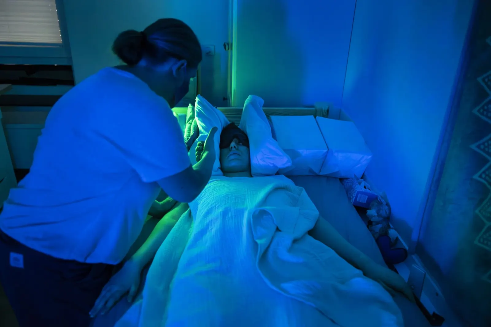
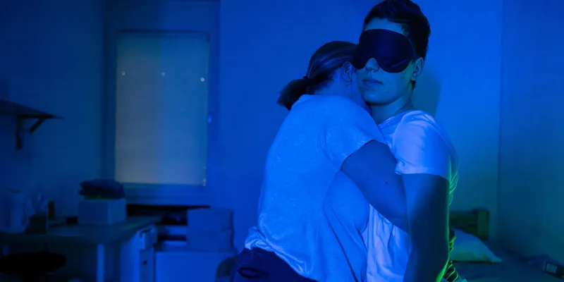
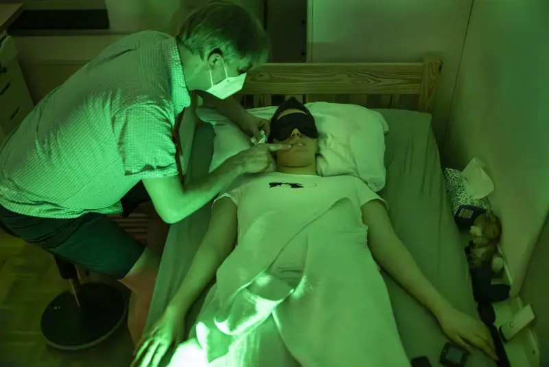

Mila Hermisson
Age 23, ME/CFS since 2018, 8 years

Mila grew up in Lower Austria. She played the cello and did sport, was good at school, drawn to the sciences, and went on strike with Fridays for Future.
In 2018 she fell ill after a viral infection. Today she has very severe ME/CFS. By 2024 she had spent almost four years in a darkened room. She cannot speak, move or care for herself. Light, sound, even voices are too much.


Her parents, Joachim and Sabine, do everything for her, from feeding to washing. She talks to them with small hand signs. Specialists are overloaded, home visits are rare, and the family carries much of the cost itself. Her father is a mathematician and held a WWTF chair from 2007 to 2013. With her sister Ella, Mila last travelled to the US, when both were healthy.
“A health system that relies only on the goodwill of individuals cannot work.”
Joachim Hermisson, her father
Photographs: Brent Stirton, Post-Pandemic ME/CFS, 08/2024